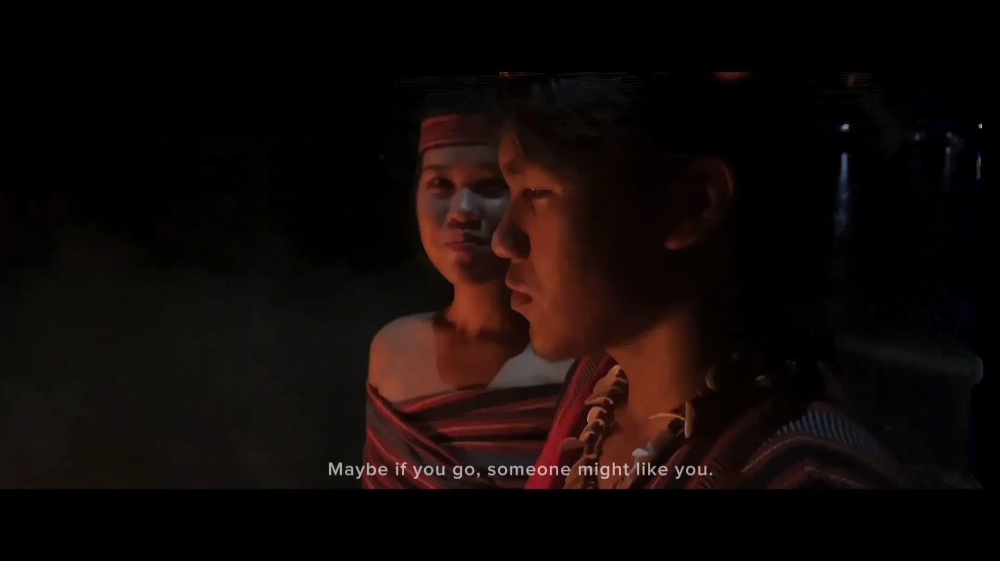
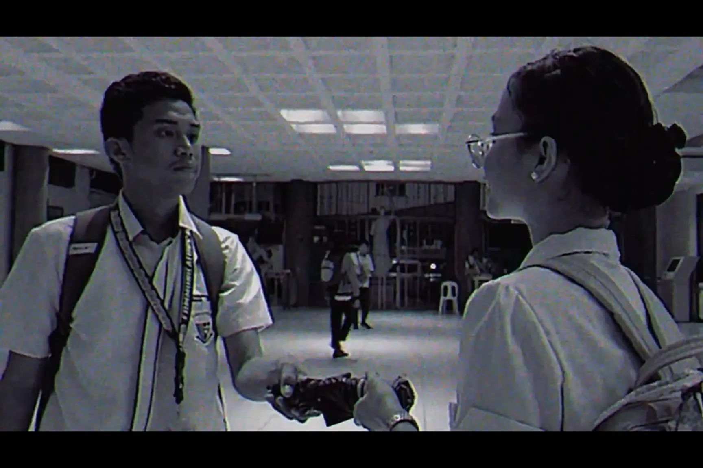
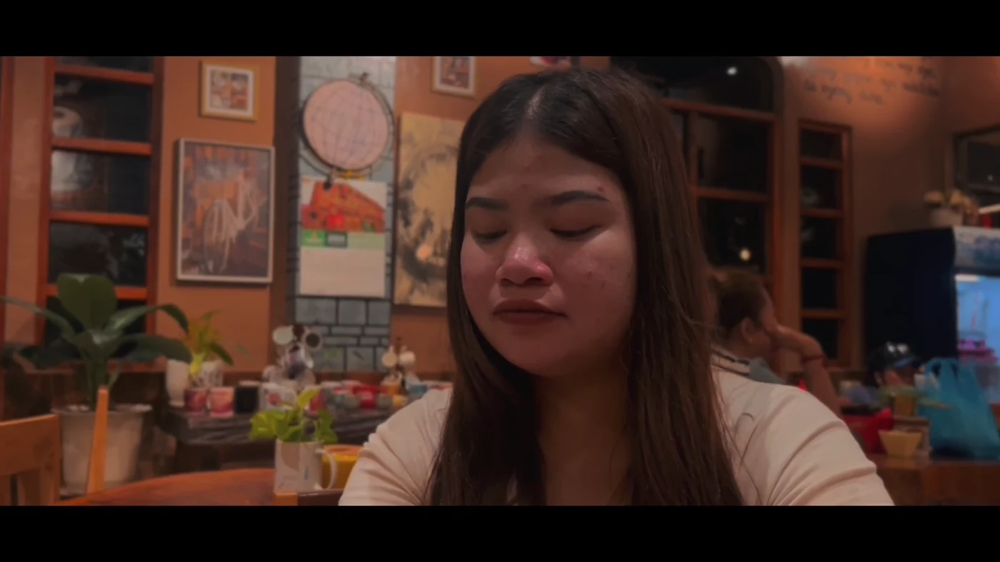

Anna Alone • Character
Stacey
Laughter becomes her shield—the smile that keeps the pain out of view.
01 Video • Film • Design • Photography
Bayugan City, Philippines Available remotely
A video editor, director, cinematographer, and visual designer creating clean, story-driven work with intentional pacing and a cinematic eye.
JPM • PORTFOLIO 2026

02 Selected video work
A curated mix of narrative films, trailers, and music videos.
 01
01
Short film • 2025 • 14:59
Writer • Director • Cinematographer • Videographer
In a rural farming village, a girl who once dreamed of being a caped hero grows up fighting poverty, injustice, and displacement—until land reform offers her the chance to claim the home her mother fought for.

02Trailer • 2024 • 2:05
Editor • Director • Writer • Cinematographer / Videographer
Short film • 2024 • 2:04
Editor • Director • Writer • Cinematographer / Videographer

04Music video • 2024 • 3:12
Editor • Director • Writer • Cinematographer / Videographer

05Music video • 2024 • 4:27
Editor • Director • Writer • Cinematographer / Videographer
+ Recent edits
More formats, more range.
03 Graphic design
Publication materials, campaign graphics, and key art for university and film projects.
04 Featured creative project
Theatre visual identity • Character portraiture
A theatrical visual identity built around fractured memory, survival, and the different voices carried within one person.
The project moves from one central piece of key art into four character-led portraits. Each image uses its own lighting, color, expression, and emotional tone while remaining part of one cohesive visual world.
Explore the character seriesPortrait series • 01—04
Four distinct personas, connected through one theatrical story and one visual language.
Anna Alone • Character
Laughter becomes her shield—the smile that keeps the pain out of view.
Anna Alone • Character
Anger is her armor; beneath it is the instinct to survive.
Anna Alone • Character
A tender, wounded voice shaped by affection, shame, and words that stayed.
Anna Alone • Character
At the center, she searches for herself while every memory speaks in another voice.
Anna Alone • Complete visual project
05 About & services
Hi, I’m Jade—a video editor, director, cinematographer, and visual creative based in Bayugan City. I began taking private freelance projects in 2023 and have since worked across short films, music videos, podcasts, social content, promotional and advocacy videos, and publication design.
My specialty is storytelling that feels natural instead of over-edited. I focus on pacing, clean cuts, purposeful B-roll, captions, shot selection, basic sound design, and visual flow. My Communication training at Father Saturnino Urios University also shapes how I approach each project through its audience, message, and purpose—not just how it looks on screen.
+ Creative toolkit
A focused workflow for editing, design, and color.